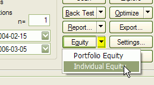
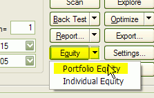
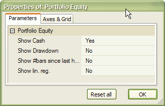

Introduction
The equity line is probably the best diagnostic tool for trading system developers.
In one graph it shows the sum total of the success or failure of the system
being tested, and the resulting effect on your equity.
Numbers from the Report telling of a drawdown are nice,
but with a graph, one can see how things were going before, during, and after
a drawdown.
The line produced by the equity function tracks the amount of equity in your
account. So, for example, if you backtest a system over the last year, you should
see that, at the beginning of that year, the line starts at the amount of your
initial equity, and then rises and falls because, as each trade makes or
loses money, the equity in your account will rise and fall. It shows how much
money is in your account throughout the backtest period, so you can visually
see how your system performed.
So, clearly you don't want to see the line go down - that means you lost money.
It is generally accepted that you want to revise your system test parameters
in order to get as close as possible to a smooth, straight, rising line. This
means that your system has performed consistently over time, and presumably
over different market conditions. A line that goes up and down frequently means
that your system works well only under certain conditions, and poorly under
other conditions.
Individual (single-security) Equity chart
To display a single-security Equity chart, it is enough to click on the drop-down arrow on the "Equity" button and choose "Individual Equity" from the menu in the Automatic Analysis window AFTER running a backtest.

This will plot the equity for the currently active symbol and the recently backtested system. If you want to see the Equity curve for another symbol, just switch to this symbol and the Equity line will be recalculated automatically.
You can also choose a symbol that was not included in the original backtest set and AmiBroker will calculate the correct equity curve as it would look if a real backtest was performed on it.
IMPORTANT: an individual equity chart is a single-security equity representation that does not show portfolio-level effects like skipping some trades due to reaching the maximum open position limit or funds being allocated to other securities. It also does not use some advanced functionality offered only by the portfolio-level backtester. For more information, see this.
Portfolio-level Equity chart
To display a portfolio-level equity chart, it is enough to double click on the "Equity" button in the Automatic Analysis window or click on the drop-down arrow on the "Equity" button and choose "Portfolio Equity" from the menu AFTER running a backtest.

Portfolio-level equity represents the equity of your entire portfolio and reflects all real-world effects like skipping trades due to insufficient funds or reaching the maximum number of open positions. It also reflects all scaling in/out, the HoldMinBars effect, early exit fees and any other feature that you may have been using in your formula. Portfolio-level equity also by default shows the remaining cash in the portfolio. Using the Parameters window (click with right mouse button over equity chart and select "Parameters" from the menu) you can turn on the display of drawdown (underwater equity curve), number of bars since last equity high and linear regression of the equity.

Equity function
The Equity() function is a single-security backtester-in-a-box. It has many interesting applications that will be outlined here. Let's look at the definition of the Equity function:
| SYNTAX | equity( Flags = 0, RangeType = -1, From = 0, To = 0 ) |
| RETURNS | ARRAY |
| FUNCTION |
Returns the Equity line based on buy/sell/short/cover rules, buy/sell/short/cover price arrays, all applied stops, and all other backtester settings. Flags - defines the behavior of the Equity function
Note: this flag value is documented, but in 99% of cases, it should not be used in your formula. Other values are reserved for the future. RangeType - defines the quotations range being used:
From : defines the start date (datenum) (when RangeType == 3) or the "n"
parameter (when RangeType == 1 or 2) To: defines the end date (datenum) (when RangeType == 3) otherwise
ignored All these parameters are evaluated at the time of the call of the Equity function. The complete equity array is generated at once. Changes to buy/sell/short/cover rules made after the call have no effect. The Equity function can be called multiple times in a single formula. |
| EXAMPLE | buy = your buy rule; sell = your sell rule; graph0 = Equity(); |
| SEE ALSO |
Using the Equity function, we can build an Equity "indicator" that will
work without the need to run the backtester. Just type the following formula in
the Formula Editor and press Apply:
buy = ... your buy rule ...
sell = .... your sell rule ...
graph0 = Equity();
Equity() function uses the buy/sell/short/cover rules that are defined BEFORE
this function is called. The whole backtesting procedure is done inside the Equity
function that generates the equity line.
Notes:
Portfolio Equity special symbol
After running a portfolio-level backtest, AmiBroker writes the values of the portfolio equity to a special symbol "~~~EQUITY". This allows you to access portfolio-level equity of the last backtest inside your formula. To do so, use Foreign function:
PortEquity = Foreign("~~~EQUITY", "C" );
This is exactly what, for example, the built-in portfolio equity chart formula is doing.
Can I calculate system statistics using Equity function?
Yes, you can. Here are a couple of example calculations kindly provided by Herman van den Bergen:
E = Equity();
//How rich you were :-)
Plot(Highest(E,"I should have sold",1,3);
//Your Current Drawdown:
Plot(Highest(E) - E,"Current DrawDown",4,1);
//Trade profits:
LongProfit = IIf(Sell,E - ValueWhen(Buy,E),0);
ShortProfit = IIf(Cover,ValueWhen(Short,E)-E,0);
Plot(IIf(Sell,LongProfit,0),"LProfit",8,2+4);
Plot(IIf(Cover,ShortProfit,0),"SProfit",4,2+4);
//Current Trade Profit:
Lastbar = Cum(1) == LastValue( Cum(1) );
Plot(IIf(LastBar AND pos,E-ValueWhen(Buy,E),ValueWhen(Short,E) - E),"Current Profit",9,2+4);
//DailyProfits:
Plot(IIf(pos,E-Ref(E,-1),Ref(E,-1)-E),"Daily Profits",7,2);
How do you plot a composite Equity Curve? I don't want the whole database, but would like to see the curve based on the watchlist I use for the backtesting.
Just use the Portfolio-Level equity chart (see above). It represents the actual portfolio backtest equity, so if you run your backtest on the watchlist it will represent what you need. You can also write your own formula that does the same thing:
Plot( Foreign("~~~EQUITY", "C" ), "PL
Equity", colorRed );